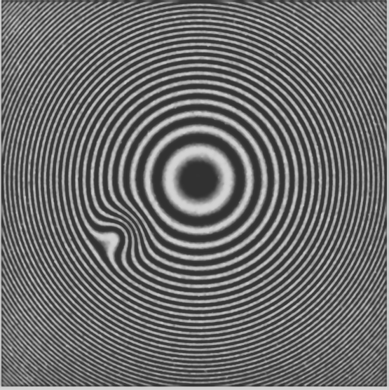

PHYSICS LAB · NEWTON RINGS
牛顿环实验智能核验平台
当前样本NR-024
原型模式
01 / VERIFY
单张实验核验
上传实验图像或选用真实样例，核对学生提交的曲率半径。
INPUT FRAME
555 × 556 px实验图像

RAW / ENHANCED或拖放到图像区域 · PNG / JPG · 分析将使用当前图片
CALIBRATION & REPORT
实时换算装置标定与提交值
px/mm
测量图像中一段已知长度：α = 像素长度 ÷ 实际长度（mm）
当前换算1 mm = 161.0 px基准样本将按平方反比重算曲率半径
m
标定值保存在当前浏览器；命令行对应参数为 --px-per-mm
分析流程0%
- 1图像预处理等待
- 2圆心定位等待
- 3圆环拟合等待
- 4曲率计算等待
✓
VERIFICATION RESULT
等待核验
系统计算 R1.0000 m161.0 px/mm · 25 环
学生提交 R— m实验报告值
相对误差—允许误差 ≤ 8%
核验建议
输入学生结果后开始核验，系统将根据当前图片拟合结果计算相对误差。
拟合优度 R²
0.939
02 / INSPECT
缺陷与平整度
查看同一实验样本的检测叠加、缺陷掩膜与面形偏差。
该图层暂时无法加载
检测中心等待当前图片NR-024 · 图像拟合
有效环数25当前图片拟合
局部缺陷1中度凹陷
拟合优度93.9%当前图片拟合
比例尺161.0px / mm · 当前装置
DEFECT #01建议复测
中度凹陷
检测中心位于 (187, 307)，方向角 −29.18°。该区域存在局部形变，建议结合原始记录进一步检测。
类型 凹陷半径 32 px风险 中度来源 真实报告
03 / OVERVIEW
班级批量统计
汇总实验提交情况，快速定位需要复查的异常记录。
CLASS DISTRIBUTION
24 份报告核验结果分布
—合格率
| 学生编号 | 系统 R / m | 学生 R / m | 相对误差 | 判定 |
|---|
没有匹配的记录
调整搜索条件或清除筛选后再试。
学生编号与提交值为匿名演示数据；系统曲率与图像指标来自真实实验输出。